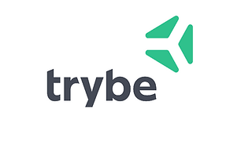

Estudante de Rio de Janeiro que conheci na primeira atividade grupal das Soft Skills.
Estudante de Rio de Janeiro, especificamente de Niterói, essa grande cidade que me recebeu ao chegar a Rio de Janeiro. Também conheci ele na primeira atividade grupal das Soft Skills.
Coincidentemente Gabriel também mora no Rio de Janeiro, um cara bom que conheci durante a primeira atividade grupal das Soft Skills.
Conheci ela durante a atividade de Autoliderança, nunca vou esquecer dela porque seu microfone nunca funcionou e nunca conseguiu falar, mas sua voz está na minha cabeça rsrs.
Google